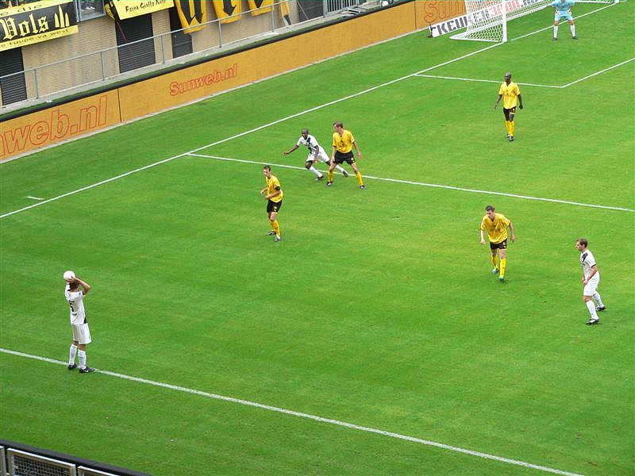

|
Roda JC - NAC (0-3) 21 september 2008 |
Foutparkeerdert wordt afgevoerd.

Flauwe eerste helft. Weinig sfeer, weinig actie.
Vrije trap Bodor smoort in de spelersbrei.
De gemiddelde leeftijd van de NACkers is 13 jaar.
Z16
Beersjleeper heeft niet in de gaten dat een van zijn biertjes om is.
Geel voor Gorter na een overtreding op Matondo.
Dit is een zorgelijke situatie. "Stadion vol" is nog een lange weg.
Dit is zorgelijker. Kwakman omspeelt Castro, die buiten zijn strafschopgebied
redding moest brengen, passeert een verdediger en laat
Kah op de doellijn kansloos: 0-1, (55').
Meeuwis doet Lurling struikelen binnen de beruchte lijnen...
Gorter verzilvert de strafschop: 0-2, (67').
Een al te enthousiast met een wit zakdoekje zwaaiende gast wordt met bier
overgoten waarna de fatsoenspolitie de zaak komt sussen.
Roda in een wanhoopsoffensief cre-eert een handvol kansjes.
Het mag niet baten, zelfs niet als Gommans erbij komt.
Aw-jee, tikje op Oper. Niet doen...hij is al zo vaak geblesseerd...
Roda wordt vernedert met een derde doelpunt gescoord door Amoah, (90').
Maaskant maakt duidelijk hands...
Nja... er is in elk geval nog bier...
Huub laat de penningen drijven...
Ondanks de nederlaag was het gezellig in de Kickoff.
Oper, Kah, De Jong en Vandamme bezochten de Kickoff.